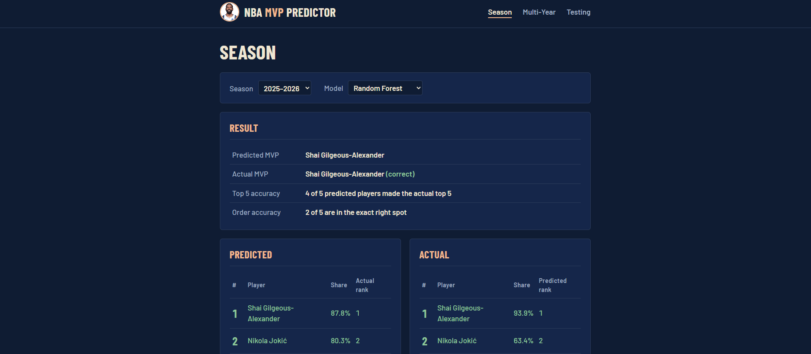

Data / ML
NBA MVP Predictor
A machine learning app that predicts the NBA MVP each season and compares its picks to the actual rankings.
- Random Forest and Gradient Boosting regression models
- 96% top-3 accuracy across 40+ seasons (season-based cross validation)
- Flask web app with a mobile-friendly layout
View on GitHub →
Click card for a preview
Add images/nba-mvp.png
